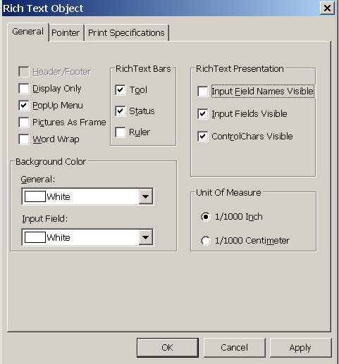

You can add a RichTextEdit control to a window to enhance your application with word processing capabilities.
Users can enter text in a RichTextEdit control, format it, save it to a file, and print it. You can also enable a pop-up menu from which users can control the appearance of the control and import documents.
 To add a RichTextEdit control to a window:
To add a RichTextEdit control to a window:
In the Window painter, select Insert>Control>RichTextEdit and click the window.
You modify the appearance of a RichTextEdit control by setting its properties. Some of the properties you can set are:
 To control the appearance of a RichTextEdit control:
To control the appearance of a RichTextEdit control:
Select the control, then select the Document tab in the Properties view.
Choose the appropriate properties to display toolbars.
Choose the appropriate properties if you want to display nonprinting characters such as tabs, spaces, and returns.
For information about other options on the Document properties page, select Help from the property page's pop-up menu.
There are times when you might want to import a file into the RichTextEdit control and not give the user the opportunity to alter it. You can make a control read-only by setting the Enabled and Popup Menu properties.
 To make a RichTextEdit control read-only:
To make a RichTextEdit control read-only:
Select the control, then select the General tab in the Properties view.
Make sure the Enabled check box is cleared.
Select the Document tab.
Make sure the PopMenu check box is cleared.
If you enable the pop-up menu property, users can customize the appearance of the RichTextEdit control.
From the pop-up menu, users can:

For more information about the RichTextEdit control, see the chapter on implementing rich text in Application Techniques .